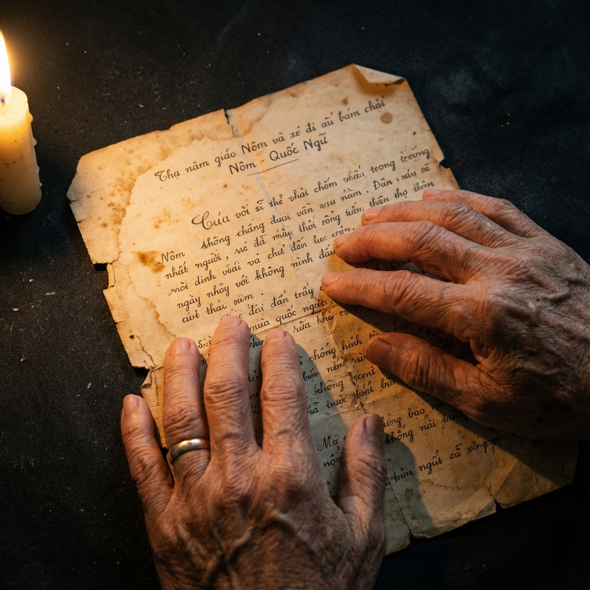

From Records of Separation
Into Acts of Repair
For fifty years, the story was told by others. Now, the archives are in the hands of the survivors.
"War is hell on Earth, but a soldier can save a child, and a child can save a soldier. She saved me." — A Volunteer Veteran
The Custodian
Devaki Murch is a survivor of the April 4, 1975, C-5A Galaxy crash. For decades, her history existed only as ink on brittle paper—data points in a military operation.
Today, she is the custodian of the Operation Babylift Collection. She is not just preserving files; she is reclaiming the agency that was stripped from thousands of children in the chaos of the war's conclusion.
"I am no longer the subject of the archive," she says. "I am its protector."

The Archive of Love
50,000+ Records
Original flight manifests, medical reports, and personal letters from Friends For All Children. The only copies in existence. These are the physical proof of thousands of lives.
A Love Ethic
Inspired by bell hooks, we treat every document not as a record, but as a human life waiting to be understood. We provide the emotional scaffolding for discovery.
Radical Discovery
We help adoptees find their birth names, their mother's last letters, and the truth of their journey home. We turn "biological data" into "found identity."
The Impact
We are in a race against time. The generation of veterans, volunteers, and birth families is aging.
Every dollar donated ensures these stories are captured before they are lost to history. We are not just building a library; we are repairing broken lineages and restoring stolen names.
Why support this?
Because a name is a human right. Because the records of a person's life should not be held hostage by bureaucracy, but held in love by the people who lived them.